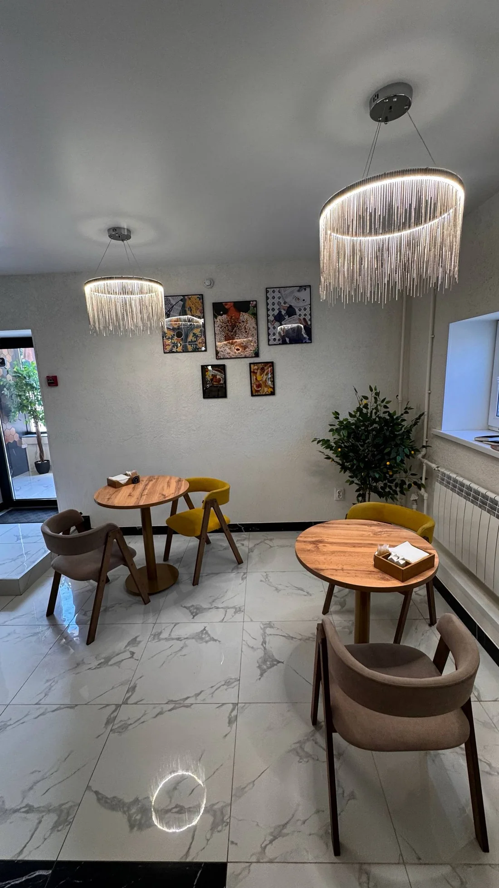
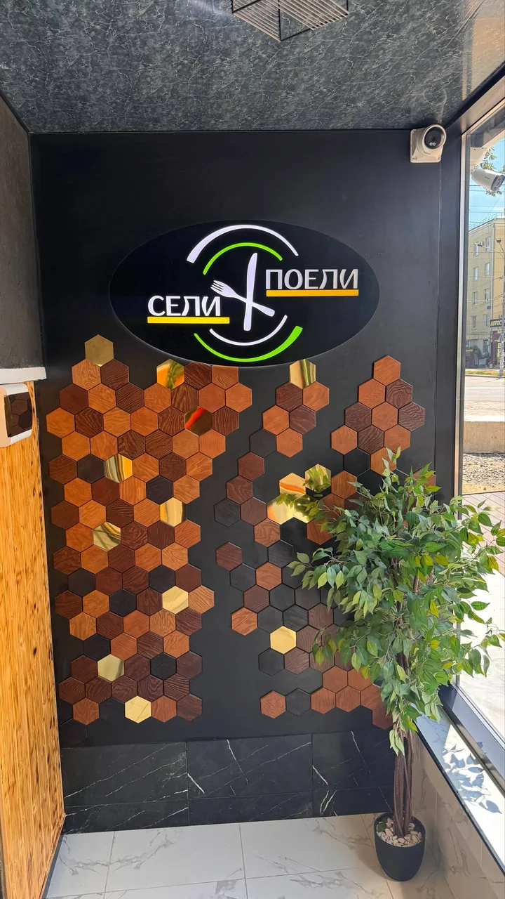
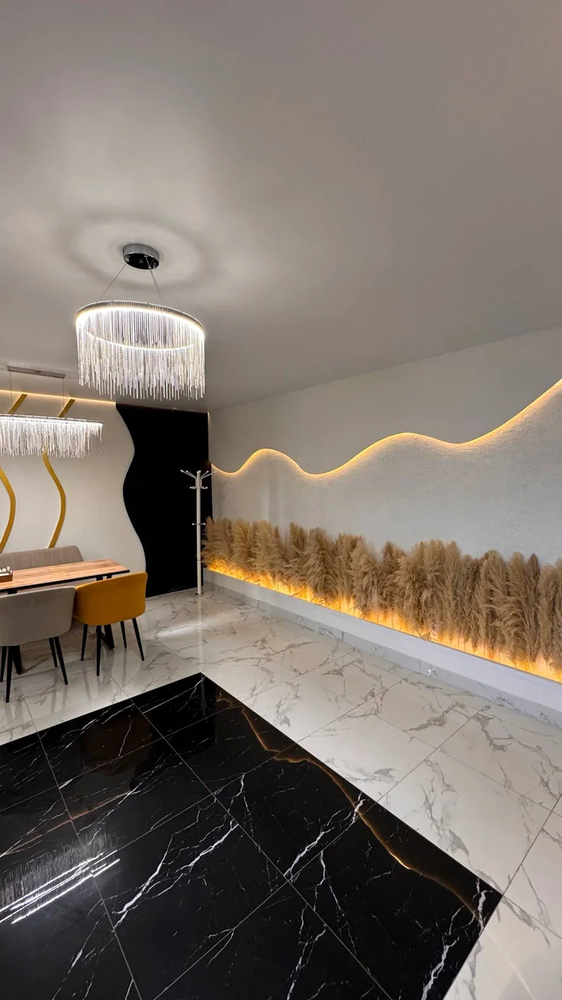
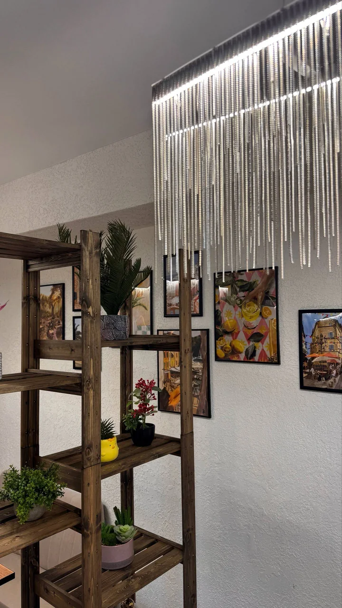

КАФЕ
От завтрака с кофе до пиццы и роллов на компанию.

Завтраки, салаты, супы и горячие блюда
Бургеры, хот-доги, сэндвичи и лаваш
Пепперони, маргарита и другие пиццы
Филадельфия, маки и запечённые роллы
Эспрессо, раф и авторский чай
Мохито, бабл ти и холодный кофе


